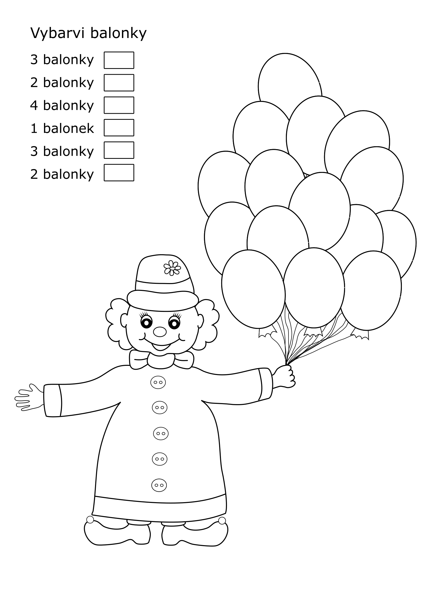
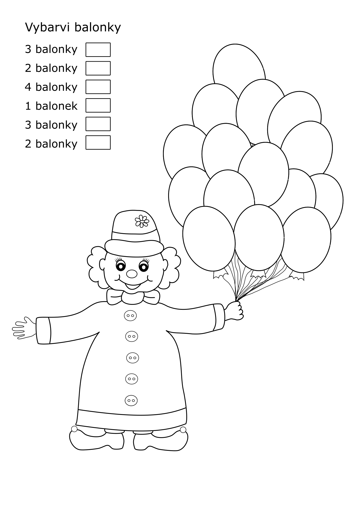

Grafika
Práce na této stránce vznikly pro mé dcery. Nemám ráda zbytečnou práci a tak, když jsem se učila pracovat s grafickými programi, vytvářela jsem obrázky, které jsem využila při hře s dětmi. Tvoření tak pro mě má dvojí smysl a o to víc mě baví.
 
